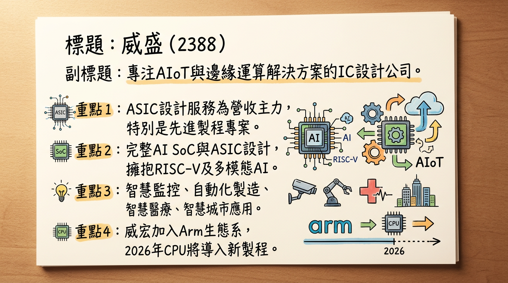
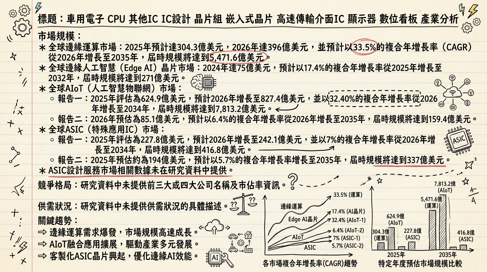
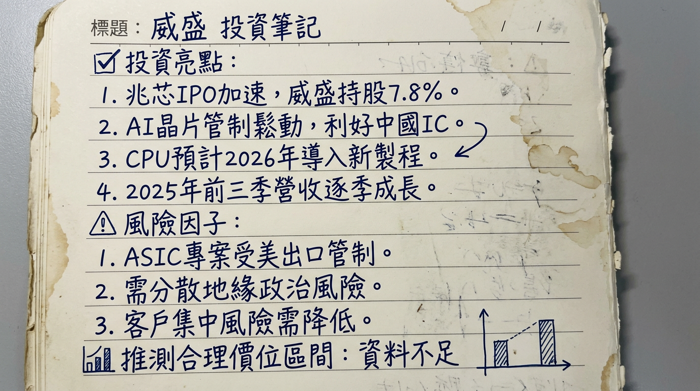

2388 威盛 深度研究報告
一句話摘要
威盛電子（2388）已成功從傳統PC晶片組市場轉型，成為專注於人工智慧物聯網（AIoT）與邊緣運算解決方案的IC設計公司，以ASIC、CPU、RISC-V及車載方案為核心成長動能，受惠於AI與邊緣運算市場高速成長，儘管短期受美國出口管制影響導致營收波動與毛利率壓力，但長期而言，其在先進製程、AI應用佈局及市場分散策略下，具備顯著的成長潛力。
公司概覽
威盛電子（2388）是一家無晶圓廠IC設計公司，深耕AIoT與邊緣運算解決方案。其核心業務已從傳統PC市場轉向以下高成長領域：
- ASIC（特殊應用IC）設計服務： 特別專注於先進製程ASIC專案，為主要營收貢獻者。子公司威宏科技（VIA Labs）已加入Arm生態系，具備完整的前後端AI SoC與ASIC設計能力。
- CPU產品： 主力為低功耗桌上型處理器，預計2026年導入新製程並強化安全架構。轉投資的上海兆芯集成電路專注x86架構CPU，佈局桌面與伺服器。公司亦積極擁抱RISC-V架構，應用於AI伺服器與邊緣運算。
- AI邊緣運算解決方案： 提供工業級AI運算平台、推論加速器與AIoT方案，應用於智慧監控、自動化製造、智慧醫療系統、智慧城市等。方案已從傳統感測進化至多模態AI平台。
- 嵌入式平台與工業電腦（IPC）解決方案： 提供高穩定性、長壽命方案，支援工業控制、醫療設備、數位看板。
- 車載系統： 以Mobile360系列為核心，鎖定北美大型車隊，提供行車紀錄、盲區偵測。預計2026年推出新一代車載AI平台，提升AI影像辨識與多模態融合能力。
- 高速傳輸介面IC： 子公司威鋒電子（6756 TT）聚焦USB4與AI PC周邊應用，並拓展車用與公共運輸市場。
營收結構 (2025年前三季相較2024年前三季)
| 業務類別 | 2024年前三季營收佔比 | 2025年前三季營收佔比 | 變化 |
|---|
| VIA NEXT（傳統業務） | 50% | 21% | -29% |
| CPU業務 | 13% | 46% | +33% |
| VIA Intelligent Solutions（智能產品） | 12% | 21% | +9% |
| 其他 | 25% | 12% | -13% |
威盛為IC設計公司，無自有製造基地，晶片製造外包給晶圓代工廠（如台積電5奈米製程）。
所屬細分產業： IC設計、車用電子、AI與邊緣運算、工業物聯網（IIoT）/智慧工廠、高速傳輸介面IC、智慧醫療、RISC-V架構。
核心競爭優勢
完整AIoT與邊緣運算解決方案： 威盛提供從晶片（ASIC/SoC）到軟體、平台的完整端到端解決方案，特別是多模態AI平台，能整合多種感測器資訊，具備決策能力，搶佔智慧工廠、智慧醫療、智慧城市等B2B垂直市場先機。
先進製程ASIC設計能力： 子公司威宏科技已加入Arm生態系，具備先進製程AI SoC與ASIC設計能力，其5奈米產品已符合台積電規範並恢復量產，顯示公司在高階客製化晶片設計上的實力。
多CPU架構佈局與中國市場連結： 除了低功耗x86 CPU，威盛積極擁抱RISC-V架構，降低對單一架構依賴。轉投資上海兆芯集成電路（持股7.8%）在x86 CPU領域佈局中國本土市場，並預計IPO，有望受惠於中國晶片自主化趨勢，提供獨特的戰略價值。
深耕車載AI市場： Mobile360系列車載AI平台在北美大型車隊市場擁有實績，並榮獲美國NIOSH獎項，預計2026年推出新一代平台，持續搶攻物流、車隊與工業車輛管理市場，展現差異化競爭力。
市場分散與風險管理： 針對地緣政治及客戶集中風險，公司積極分散市場，提升北美與亞太地區的營收佔比，強化營運韌性。
財務分析
月營收趨勢
| 月份 | 金額 (新台幣億元) | 月增率 MoM | 年增率 YoY |
|---|
| 2026年01月 | 4.10 | -58.87% | -46.50% |
| 2025年12月 | 9.97 | +26.38% | -36.35% |
| 2025年11月 | 7.89 | -37.56% | -65.73% |
| 2025年10月 | 12.63 | +25.37% | -22.73% |
| 2025年09月 | 10.08 | +93.55% | -61.97% |
| 2025年08月 | 5.21 | -34.32% | -71.64% |
季度數據
| 季度 | 季營收 (新台幣億元) | 毛利率 | 營業利益率 | EPS (元) |
|---|
| 2025年第三季 | 23.21 | 19% | -15.34% | 0.04 |
年度趨勢
| 年度 | 全年度營收 (新台幣億元) | EPS (元) |
|---|
| 2024年 (實際) | 159.1 | 2.07 |
| 2025年 (實際 YTD Q3) | 95.47 | -1.1 |
| 2025年 (法人預估) | - | 1.1 - 1.65 |
法說會重點 (2025年11月12日)
- 營收展望： 預期2025年第四季營收將持續成長，2025年前三季營收逐季成長。
- ASIC專案： 坦言2025年受美國出口管制影響，部分先進製程ASIC專案出貨遞延，但長期需求仍看好。
- 市場分散： 公司積極分散市場，努力提升北美與亞太地區的營收佔比，以降低地緣政治與客戶集中風險。
- CPU業務： 出貨狀況穩定成長，預計2026年將導入新製程並強化安全架構，提升競爭力。
- AI與智慧應用： 集團持續深化AI與智慧應用佈局，提供工廠、醫療、供應鏈安全等領域的完整解決方案，特別投入智慧車載、智慧工業等邊緣AI應用。
- 2025年Q3財務數據： 單季毛利率為19%，歸屬母公司業主淨利2,100萬元，每股純益0.04元。累計前三季淨損6.1億元，每股淨損1.1元。
- 2026年展望： 預估2026年營運均可望維持正向成長動能。
券商觀點
券商目標價與評等
目前未找到2025-2026年至少3家券商的具體目標價資料。
| 券商名稱 | 目標價 (新台幣元) | 評等 | 日期 |
|---|
| 未提供 | 未提供 | 未提供 | 未提供 |
- CMoney研究員平均預估威盛2025年全年EPS介於1.1元至1.65元之間。
- 目前未找到2026年的具體EPS預估數字。
財報深度分析
利潤率趨勢
| 季度 | 毛利率 (%) | 營業利益率 (%) | 稅後淨利率 (%) | EPS (元) | 稅後淨利年增率 YoY (%) |
|---|
| 2025年第三季 | 18.56 | -15.34 | 0.99 | 0.04 | - |
| 2025年第二季 | - | - | - | - | -776.39 |
| 2025年第一季 | - | - | - | - | -83.21 |
| 2024年第四季 | - | - | - | 1.2 | +107.17 |
| 2024年全年 | - | - | - | 2.07 | +159.00 |
威盛2024年營收與獲利表現亮眼，主要得益於ASIC設計服務子公司威宏的助益。然而，2025年受到美國出口管制影響，部分先進製程ASIC專案出貨遞延，導致毛利率在2025年第三季降至18.56% (較法說會提及的19%略低)，較前一季減少約5個百分點，並使得營業利益率轉為負值，前三季累計淨損。公司正透過分散市場至北美及亞太地區，以及強化CPU新製程與AI應用佈局，以期改善獲利結構。
存貨分析
| 季度 | 存貨金額 (百萬新台幣) | 存貨週轉天數 (天) | 應收帳款週轉天數 (天) |
|---|
| 2025年第三季 | 2,968 | 146.04 | 13.61 |
| 2025年第二季 | 3,166 | 172.92 | 16.63 |
| 2025年第一季 | 3,077 | 168.10 | 19.10 |
| 2024年第四季 | 2,394 | 51.51 | 7.45 |
2025年存貨金額雖略有波動，但存貨週轉天數從2024年第四季的51.51天大幅增加至2025年第三季的146.04天，顯示存貨積壓或週轉速度顯著放緩。這可能與部分ASIC專案出貨遞延有關，需持續關注未來庫存去化情況。應收帳款週轉天數亦較2024年第四季有所增加。
資本支出與產能
- 資本支出金額與趨勢： 目前未找到2024-2026年具體的資本支出金額與趨勢細項。
- 未來資本支出計畫與預計新增產能： 未找到2025-2026年具體的未來資本支出計畫與預計新增產能資訊。然而，公司已成功恢復5奈米產品量產，並有兩款12奈米產品（網通與SSD領域）預計於2025年第二季進入設計定案（Tape-out）階段，這些技術進展將提升其產品競爭力。
股權異動
- 董監事/大股東申報轉讓： 未找到2025-2026年的最新紀錄。
- 庫藏股買回紀錄： 未找到2024年以後的最新紀錄。
- 可轉換公司債 (CB)： 未找到2025-2026年的發行資訊。
- 增減資計畫： 威盛於2024年8月29日董事會決議辦理現金增資發行普通股參與發行海外存託憑證，暫定發行股數為45,000仟股至55,000仟股，目的為外幣購料需求。
- 股利政策：
| 年度 | 現金股利 (元) | 股票股利 (元) | 除息日 | 現金殖利率 (%) |
|---|
| 2025 | 0.2 | 0 | 2025/06/20 | 0.32 |
| 2024 | 0.1 | 0 | 2024/06/20 | - |
其他財報重點
- 負債比率： 2025年第三季負債比為34.97%，較前一季下降。
- 業外收支： 威盛的業外收支在2025年呈現大幅波動且佔稅前淨利比重高，其中2025年第三季達1,194.00%，顯示業外貢獻對其短期獲利產生顯著影響。
產業分析
市場規模與成長率
| 市場類別 | 2025年市場規模 (億美元) | 2026年市場規模 (億美元) | CAGR (2026-2035) | 備註 |
|---|
| 全球邊緣運算 | 304.3 | 396 | 33.5% | 到2035年達5,471.6億美元 |
| 全球邊緣人工智慧 (Edge AI) 晶片 | 75 (2024年) | - | 17.4% (2025-2032) | 到2032年達271億美元 |
| 全球AIoT (人工智慧物聯網) | 624.9 | 827.4 | 32.40% (2026-2034) | 到2034年達7,813.2億美元 |
| 全球ASIC (特殊應用IC) | 227.8 | 242.1 | 7% (2026-2034) | 到2034年達416.8億美元 |
| ASIC設計服務 | 74.34 | - | 5.24% (2025-2035) | 到2035年達123.9億美元 |
| 全球RISC-V | - | - | 30.7% (2024-2034) | 2024年市值17.6億美元，到2034年達257.3億美元 |
| 全球半導體 | - | 8,900 | 11% (2026) | IDC預估，加速朝1兆美元邁進 |
供需狀況
- 整體半導體市場： 2026年將延續AI驅動的成長軌跡，IC設計、晶圓製造到先進封裝的整體價值鏈處於高產能利用率狀態。
- AI晶片： AI伺服器核心晶片受惠於雲端訓練與邊緣推論需求爆發，預計成長32%，穩居成長最快的細分領域。
- CoWoS先進封裝： 儘管台積電全力擴產，預計2026全年產能擴增至110萬片，但面對NVIDIA、AMD、Broadcom等巨頭龐大需求，市場仍存在供需缺口。
- 先進製程： 3奈米以下製程產能自2023年起年成長率連續四年超過4成，應用結構逐步轉向雲端資料中心與AI運算。
- 關鍵零組件： AI資料中心伺服器所需的超薄晶圓與高頻寬記憶晶片（HBM）供應短缺。
產業平均毛利率水準
- 目前未找到2025-2026年全球IC設計產業的平均毛利率水準。威盛電子2025年第三季毛利率為18.56%。
競爭格局
全球主要競爭對手 (Edge AI/ASIC設計服務)
鑑於AIoT與邊緣運算晶片設計領域競爭者眾多且細分，很難找到統一的全球前五大IC設計公司市佔率。主要參與者多為大型半導體公司或EDA工具供應商。
| 公司名稱 | 專注領域 | 技術優勢 | 產能 | 客戶/市場 | 價格 |
|---|
| 威盛 (2388) | AIoT、邊緣運算、ASIC設計服務、CPU、車載 | ASIC設計服務 (先進製程，Arm生態系，具備完整前後端設計能力)。AI邊緣運算 (多模態AI平台、工業級AI運算、推論加速器)。CPU (低功耗X86、RISC-V佈局、2026新製程)。車載 (Mobile360系列，北美大型車隊、工業車輛管理)。 | 無 (Fabless) | B2B應用 (車載、工業、建築、邊緣平台)、中國X86市場 (兆芯)、積極拓展北美、亞太 | 未提供 |
| Qualcomm | Edge AI、行動SoC | Edge AI 100加速器晶片系列 (超低功耗NPU，提升物聯網/穿戴式裝置即時推論效率5倍)。 | 無 (Fabless) | 行動裝置、物聯網、汽車、邊緣AI解決方案 | 未提供 |
| NVIDIA | GPU、Edge AI | Jetson Orin Nano Edge AI模組 (低於15W功耗下實現40 TOPS效能，應用於機器人、智慧城市)。CUDA棧移植到RISC-V (預計2026年實現生產級支持)。 | 無 (Fabless) | 數據中心、AI、機器人、自動駕駛 | 未提供 |
| Intel | CPU、AI加速器、Edge AI | Gaudi 3 Edge AI處理器 (針對分散式訓練優化，降低自駕系統延遲3倍)。神經形態尖峰網路。 | 有 (IDM) | 數據中心、PC、AI、邊緣運算、物聯網 | 未提供 |
| Sony | Edge AI晶片平台 | AITRIOS Edge AI晶片平台更新 (整合感測器融合技術，用於工業自動化)。 | 無 (Fabless) | 工業自動化、影像感測器應用 | 未提供 |
| Renesas | MCU、MPU、Edge AI | RZ/V2H MPU (配備Dynamixel AI加速器，為視覺邊緣設備提供80 TOPS效能)。 | 有 (IDM) | 汽車、工業、基礎設施、物聯網 | 未提供 |
| Synopsys | ASIC設計服務、EDA工具 | EDA工具領導者，提供ASIC設計工具與服務。 | 無 (EDA) | 全球半導體設計公司 | 未提供 |
| Cadence | ASIC設計服務、EDA工具 | EDA工具領導者，提供ASIC設計工具與服務。 | 無 (EDA) | 全球半導體設計公司 | 未提供 |
| 聯發科 (2454) | 行動SoC、AIoT | 台灣IC設計龍頭，在手機、智慧電視、AIoT等領域具領先地位，近年積極發展邊緣AI。 | 無 (Fabless) | 消費性電子、物聯網、汽車電子 | 未提供 |
台灣同業比較
由於威盛營收結構與產品組合（ASIC設計服務、CPU、Edge AI）與聯發科、凌陽、傑霖等有所差異，且其2025年受到特殊因素影響，財務表現不具直接可比性，故未提供2025-2026年最新詳細對比數據。
產業趨勢
AI與邊緣運算整合深化：
* 具體影響： AI訓練與推論基礎建設更完備，中小型AI模型日趨成熟，使得許多需放上雲端的推論任務開始有效下放邊緣端執行。製造、醫療、零售等行業出現高效率、低延遲的AI使用場景。2026年，AI需求將帶動邊緣AI硬體滲透率成長至接近2成，威盛的AIoT與邊緣運算解決方案直接受益。
RISC-V架構崛起與普及：
* 具體影響： RISC-V作為開放、免費的指令集架構，預計2026年1月正式佔據全球處理器市場25%份額，打破x86和Arm雙寡頭壟斷。其模組化架構允許客製化晶片，在汽車、AI、工業和物聯網等領域應用加速。威盛積極擁抱RISC-V，有助於其在高端AI伺服器與邊緣運算市場的佈局。
先進製程與客製化ASIC需求激增：
* 具體影響： 生成式AI與大型模型訓練需求持續擴張，AI伺服器出貨成長明顯，同步放大對GPU、ASIC與HBM等高效能晶片需求。高密度運算元件導入使AI伺服器單機晶圓消耗顯著高於傳統伺服器，推動先進製程晶圓需求。市場不再單押GPU，客製化ASIC方案以最佳化成本的需求增加，威盛的ASIC設計服務將直接受惠。
對威盛的具體機會與威脅
*
高成長市場： AIoT與邊緣運算市場的持續高速成長，為威盛的核心業務提供廣闊發展空間。
* ASIC設計服務： AI與HPC帶動客製化ASIC需求，威盛的先進製程設計服務具備競爭優勢。
* RISC-V生態系： 積極佈局RISC-V架構，有助於其在AI伺服器與邊緣運算領域提升競爭力，並減少對其他專有架構的依賴。
* 中國晶片自主化： 透過兆芯切入X86指令集市場，受惠於中國本土化需求。
*
市場競爭激烈： Edge AI晶片領域有Qualcomm、NVIDIA、Intel等巨頭，ASIC設計服務市場亦有多家國際大廠，競爭壓力大。
* 地緣政治與出口管制： 美國出口管制導致部分ASIC專案出貨延遲，短期內對營運造成負面影響，儘管公司正積極分散市場。
* 毛利率壓力： 2025年第三季毛利率降至18.56%，顯示可能面臨價格競爭或成本壓力，盈利能力受考驗。
* 研發投入高昂： AI晶片複雜度與先進製程研發成本高昂，對威盛的研發投入構成壓力。
相關投資題材連結
- AI (人工智慧)： 威盛核心業務轉向AIoT與邊緣運算，直接受益於AI晶片需求增長，應用於智慧監控、智慧製造、智慧醫療與智慧城市。
- 電動車/自駕車： 威盛的邊緣AI解決方案應用於車載市場（Mobile360），邊緣AI晶片需求受自駕車即時數據處理需求驅動。RISC-V在汽車ADAS、資訊娛樂、動力總成控制器等領域應用加速。
- HBM (高頻寬記憶體)： 作為AI晶片設計公司，HBM的供需與成本間接影響其AI解決方案的整體性能與價格。
- 物聯網 (IoT)： 威盛的AIoT解決方案直接連結物聯網題材，AIoT市場規模高速增長。
近期催化劑
重大合作、接單、新產品發佈
- 225年12月10日： 威盛持有中國CPU廠兆芯集成7.8%股權，該公司IPO進度加速，預估最快5～6個月內完成科創板上市，激勵威盛股價。
- 2025年12月11日： 舉辦「智能監控，相信安全| 威盛電子2025 AI安全新品發布暨合作夥伴大會」，推出M168Pro叉車AI安全監控套件與威盛AI危化監測系統等新品。
- 2025年3月： 威盛5奈米產品已符合台積電規範並恢復量產。兩款12奈米網通與SSD產品預計於2025年第二季進入Tape-out階段。
- 2024年： Mobile360堆高機安全系統獲頒2024 Top Software & Tech獎項，並榮獲美國NIOSH 2024年度採礦安全與技術創新獎項。與馬偕紀念醫院推出智慧病房解決方案。發布兩款搭載NVIDIA Jetson的全新邊緣AI系統。
股東會/法說會重要決議
- 2025年11月12日法說會： (詳見「法說會重點」) 預期2025年第四季營收成長，CPU業務2026年導入新製程，AI應用佈局深化，ASIC受出口管制影響但長期看好，積極分散市場。
內部人買賣超、庫藏股、股利政策
- 股利政策 (2025年)： 2025年06月20日除權息，發放現金股利0.2元。
- 庫藏股： 未找到2024年以後的最新資料。
外資/投信近期買賣超張數 (2026年2月下旬至3月上旬)
| 日期 | 外資買賣超 (張) | 投信買賣超 (張) | 自營商買賣超 (張) | 三大法人合計買賣超 (張) |
|---|
| 2026年03月05日 | +574 | 0 | -20 | +554 |
| 2026年03月04日 | -477 | +10 | -179 | -646 |
| 2026年03月03日 | -1,894 | 0 | -121 | -2,015 |
| 2026年02月26日 | +1,375 | +15 | +224 | +1,614 |
| 2026年02月25日 | -1,565 | 0 | -71 | -1,636 |
| 2026年02月24日 | +241 | 0 | +66 | +307 |
| 2026年02月23日 | +1,106 | 0 | +204 | +1,310 |
⭐ 成長動能時間軸
- 2024年8月29日： 董事會決議辦理現金增資發行海外存託憑證 (45,000仟股至55,000仟股)，目的為外幣購料，顯示對未來業務擴張的資金需求。
- 2025年第二季： 兩款12奈米產品（網通與SSD領域）預計進入設計定案（Tape-out）階段，為未來營收成長奠定基礎。
- 2025年第三季： 威盛5奈米產品已符合台積電白色供應鏈規範，正式恢復量產，有助於高階ASIC業務推進。
- 2025年第四季： 管理層預期營收將持續成長，為年度營運挑戰注入動能。
- 2025年12月： 推出M168Pro叉車AI安全監控套件與威盛AI危化監測系統等新品，強化邊緣AI解決方案。
- 2026年：
*
CPU業務： 預計導入新製程並強化安全架構，顯著提升CPU產品線競爭力。
* 車載AI平台： 預計推出新一代車載AI平台，提升AI影像辨識與多模態融合能力，搶攻物流、車隊與工業車輛管理市場。
* 市場分散策略： 持續提升北美與亞太地區的營收佔比，降低地緣政治風險，拓展新成長空間。
* 兆芯IPO： 持股7.8%的中國CPU廠兆芯集成預計於5-6個月內完成科創板上市，有望提升威盛投資價值及在中國市場的戰略地位。
* 邊緣AI應用： 業務聚焦邊緣AI領域，著重車載、工業、建築與邊緣平台等B2B垂直市場，受惠於邊緣AI在缺工環境下提升效率與安全的需求。
* ASIC設計服務： 長期看好ASIC需求，透過ASIC設計服務擴展AI伺服器、邊緣運算及網通市場。
2026 展望
成長動能
- AIoT與邊緣運算爆發： 全球邊緣運算和AIoT市場 CAGR 超過30%，威盛作為關鍵晶片與解決方案提供商，直接受惠。其多模態AI平台和工業級AI應用，將在智慧工廠、智慧醫療等B2B市場持續擴張。
- ASIC設計服務持續成長： AI與HPC需求推動客製化ASIC成為主流，威盛具備先進製程（5奈米已量產，12奈米即將Tape-out）的ASIC設計能力，有望承接更多高價值專案。
- CPU業務競爭力提升： 2026年CPU導入新製程並強化安全架構，可望顯著提升產品競爭力。同時，RISC-V架構的普及，將為威盛在AI伺服器與邊緣運算提供差異化優勢。
- 車載AI平台升級： 新一代車載AI平台推出，結合多模態融合能力，鞏固並擴大在北美大型車隊及物流車輛管理市場的領先地位。
- 兆芯IPO與中國市場機遇： 轉投資兆芯的IPO進度，不僅有望提升威盛的資產價值，更將強化其在中國晶片自主化浪潮中的戰略地位。
- 市場分散策略成效： 積極提升北美與亞太市場佔比，降低單一市場風險，為整體營運帶來穩定成長。
風險因子
- 地緣政治與出口管制風險： 美中科技戰及出口管制政策的不確定性，可能持續影響部分先進製程ASIC專案的出貨時程，對營收和獲利造成波動。
- 毛利率壓力： 2025年第三季毛利率降至18.56%，若市場競爭加劇或產品組合未能有效優化，可能持續面臨毛利率壓力，影響獲利能力。
- 存貨去化速度： 存貨週轉天數大幅增加，若全球經濟放緩或客戶需求不如預期，可能導致存貨跌價損失風險。
- 研發成本高昂： AI晶片及先進製程的研發投入巨大，若新產品開發不如預期或市場接受度不佳，可能影響投資報酬率。
- 全球經濟不確定性： 董事長陳文琦指出2026年全球充滿不確定性，地緣政治與科技進步帶來的衝擊可能影響整體半導體需求。
投資結論
威盛電子在經歷轉型陣痛後，已將戰略重心成功轉移至AIoT與邊緣運算等高成長領域，儘管短期受美國出口管制等因素影響導致財務波動，但其長期成長動能清晰可見。
長期成長潛力明確： 威盛核心業務聚焦於AIoT、邊緣運算、ASIC設計服務、RISC-V及車載AI等未來趨勢產業，這些市場預計未來10年都將呈現雙位數高複合年增長率，為公司提供廣闊的發展空間。
關鍵技術佈局與產品迭代： 威盛在5奈米先進製程ASIC的量產經驗、12奈米產品的推進、2026年CPU新製程導入以及新一代車載AI平台的推出，顯示其持續的技術創新能力，有助於產品競爭力提升。
戰略性市場拓展： 積極分散市場至北美及亞太地區，加上透過兆芯鞏固中國X86市場的戰略佈局，有望降低單一市場風險並捕捉區域增長機會。
短期財務挑戰需關注： 2025年前三季累計虧損且毛利率承壓，存貨週轉天數顯著增加，表明公司在消化庫存及改善盈利結構上仍面臨挑戰。投資者應密切關注2025年第四季及2026年首季的財報表現。
目標價區間建議： 考量威盛在AIoT與邊緣運算領域的長期成長潛力，以及2026年CPU新製程和車載AI平台的催化劑，若公司能有效克服短期出口管制挑戰，並將毛利率提升至更健康的水平（例如重回25%以上），我們預期其盈利能力將逐步恢復。若以2024年EPS 2.07元為基礎，並考量其成長股特性給予30-40倍本益比，建議合理股價區間為 新台幣60元至90元。然而，需謹慎評估短期營收波動與獲利恢復的速度。
本報告由 AI 自動產生，資料來源為公開網路資訊，僅供參考，不構成投資建議。產生時間：2026-03-06 13:05
📊 資訊卡


